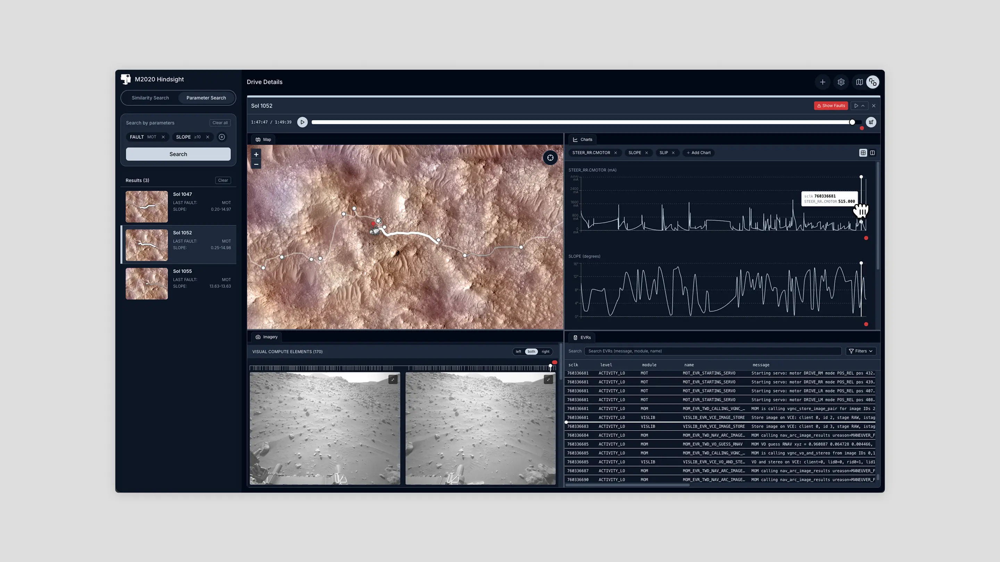

Hindsight
A visualization and retrieval tool for Perseverance rover operators to find and compare past drives across mission data.
Challenge
The Mars 2020 mission requires meticulous coordination and communication across engineering, science, and operations to ensure that research on Mars is safe and efficient. To assemble contextual information about the environment and rover for decision-making, rover operators need to correlate snapshots of various data across several decoupled tools, a labor-intensive process heavily reliant on personal memory. This results in significant cognitive burden, makes planning time-consuming, and presents a barrier when training new personnel, given the reliance on unwritten, institutional knowledge.

Scope
End-to-end product development over the course of ten weeks. The first five involved exploratory design probes, followed by five weeks of iterative usability testing as operational integration was being discussed. I owned interaction design, visual design, and prototyping. We wrapped up this project as a working application over a subset of mission data, having evaluated it with rover operators.
Discovery
Early explorations into data representation referenced graphical scores and dance notation (e.g., Labanotation) as a way to encode rover telemetry: how do operators construct a mental model of rover and environment conditions as they navigate data? What levels of detail and hierarchy do they need, and would creating a shorthand be helpful when revisiting past drives?


Bringing this to the rover ops team, we soon cut this direction, favoring directness (showing the raw data directly) over abstraction. The anticipated cost of learning a new representation outweighed its expected utility. We pivoted to understanding how operators recognize and search for similar drives.
We ran a design probe asking operators to draw their most memorable drive, which emphasized the importance of the orbital map as the anchor for recalling obstacles and contextual nuances. We had assumed that imagining oneself as a rover would inform operators’ mental models; the probe suggested that they instead viewed drives through the lens of the onboard navigation software. This, together with rigorous training across shifts, contributes to operators’ specialized intuition.

We learned that operators need direct access to raw data and their understanding of similarity is more nuanced than explicit parameter matching. We needed to ensure that our solution could support different entry points (ways of searching) into the mission archive and communicate context in a shareable way.
System
We moved from rough Figma sketches to a React web application that serves as a search engine for past drives. Drawing on operator interviews, we addressed the challenge of similarity through two search modes.
1. Investigate—searching the archive
The first mode is a parameterized search with explicitly defined search criteria based on recalled thresholds, useful when operators have fresh context from their most recent shift.

In the second mode, operators use a specific drive’s profile across self-defined telemetry channels as the query. Functionally similar drives are those whose data most closely aligns with the template, calculated using Dynamic Time Warping and ranked for comparison.

2. Analyze—one drive, many representations
To address the problem of fragmented data correlation, a playhead synchronizes playback of all data sources: the rover’s position on the orbital map, drive imagery, flight software logs, and other charts. With Golden Layout, the interface can be reorganized to suit operator preference (in practice often tiling across multiple monitors).

3. Collaborate—making tacit knowledge portable
Deep-linking enables snapshots of precise window state so that Operations can share their searches with Science and Engineering.
Impact
In usability testing sessions, one rover operator noted that Hindsight’s synchronized workspace enables operators to “explore the telemetry spatially, making it easier to understand how the terrain impacts the telemetry we’re observing.” Another operator estimated that assembling telemetry of interest took 2–3 minutes with Hindsight, compared with the 15–20 minutes using existing tools.
We concluded this project with a handoff to our ops partners and a paper accepted into IEEE VIS 2026 (preprint on arXiv).